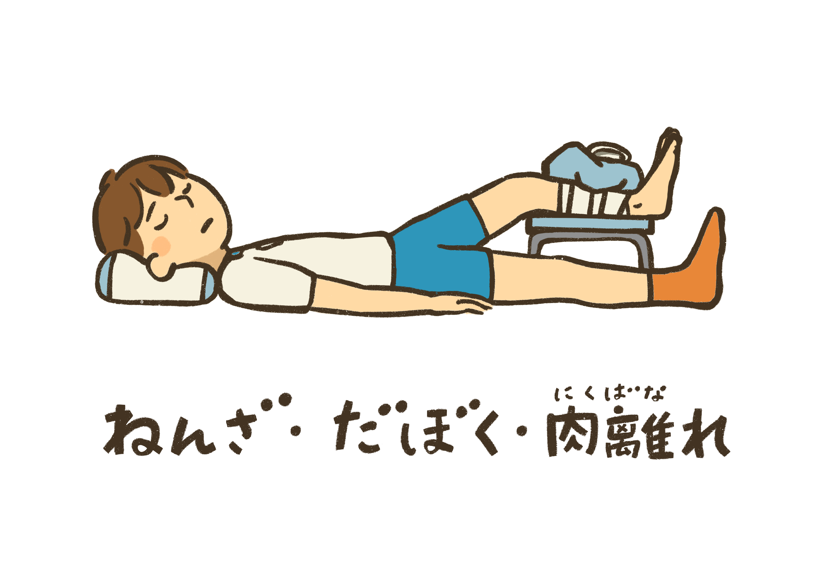
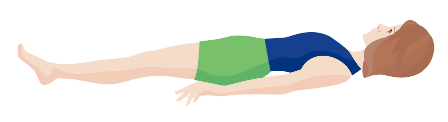
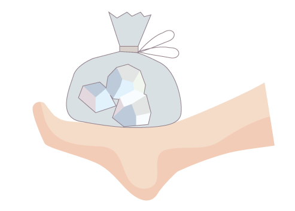
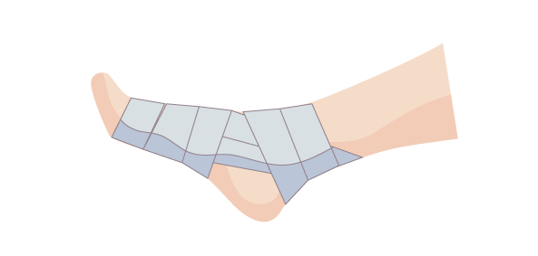
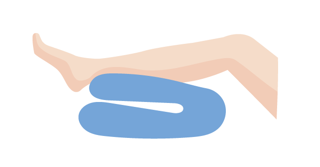

RICE処置
RICE処置とは
RICE処置とは、肉離れや打撲、捻挫などの急性外傷を受けたときに、病院や診療所にかかるまでに行う基本的な応急処置方法です。
Rest（安静）・Icing（冷却）・ Compression（圧迫）・Elevation（挙上）の4つの処置の頭文字から名付けられました。
早期にRICE処置を行うことで、内出血や腫れ、痛みなど損傷部位の障害を最小限に抑えて回復を助ける効果があり、早期のスポーツ復帰に欠かせないものです。
処置後は速やかに医療機関を受診しましょう。
すぐに医師の診察を受けられる場合は、Rest（安静）、Elevation（挙上）などできる範囲の処置を行いましょう。

1．Rest（安静）
損傷部位の腫れや血管・神経の損傷を防ぐことが目的としています。
副子（固定ができる添え木や厚紙やタオルなど）やテーピング、弾性包帯等で患部を固定します。

2．Icing（冷却）
患部を氷や氷水で冷やし体温を下げることで、毛細血管を収縮させて腫れや内出血、細胞壊死を抑えます。
15分～20分冷却し、患部の感覚がなくなったら外し、また痛みが出てきたら冷やすことを何度か繰り返します。

3．Compression（圧迫）
患部にスポンジやテーピングパッドをあてた上からテーピングや弾性包帯を巻いて患部を圧迫し、腫れや内出血を最小限に抑えます。
テーピングや弾性包帯の代用としてサランラップを利用しても良いでしょう。

4．Elevation（挙上）
腫れや内出血を防いだり軽減するために、患部を心臓より高く挙げます。
患部の下に座布団やクッションや畳んだ毛布などを敷きます。

参考文献
http://www.jossm.or.jp/series/flie/003.pdf
https://www.healthcare.omron.co.jp/pain-with/sports-acute-pain/rice/
https://www.joa.or.jp/public/sick/condition/athletic_injury.html